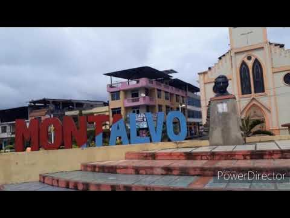
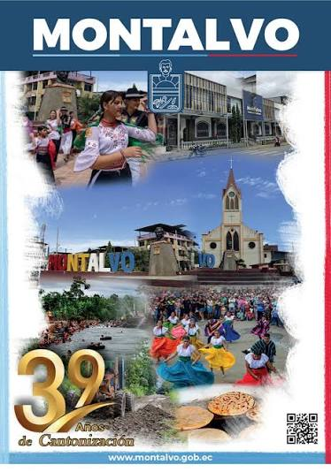
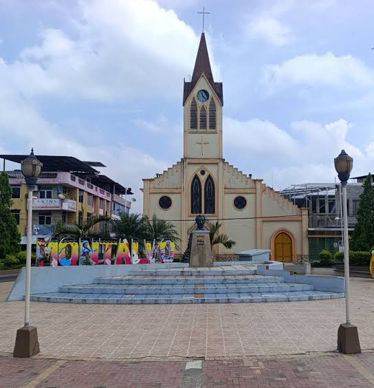
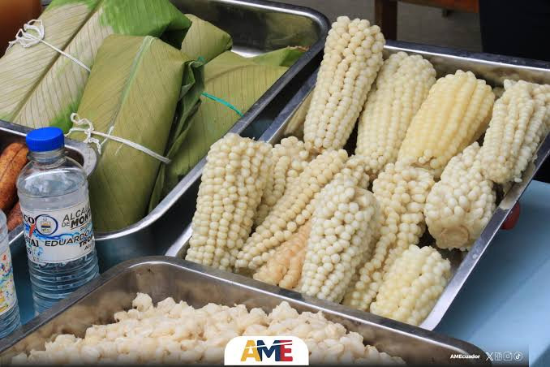
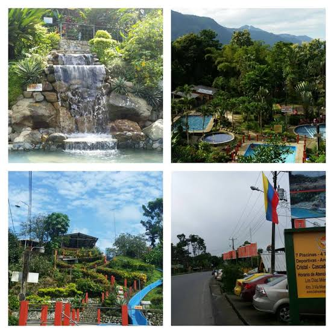
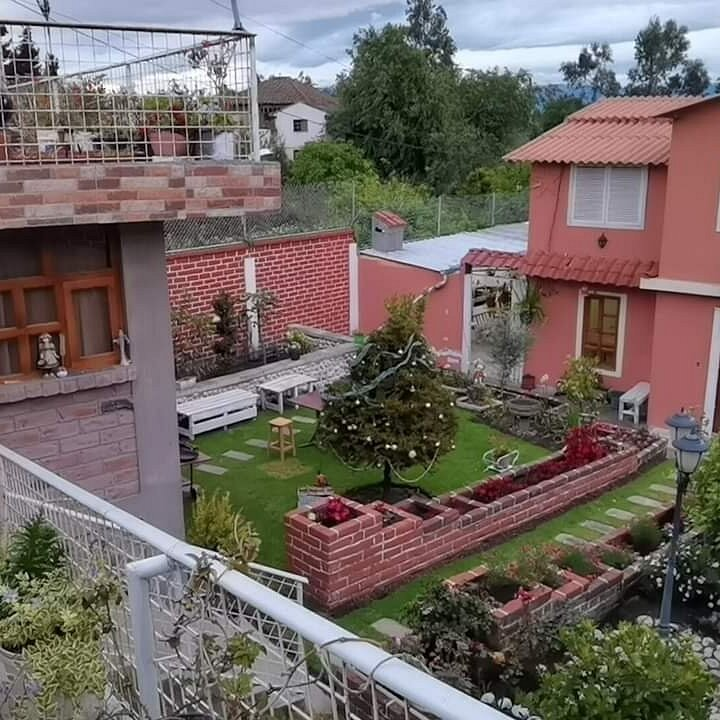
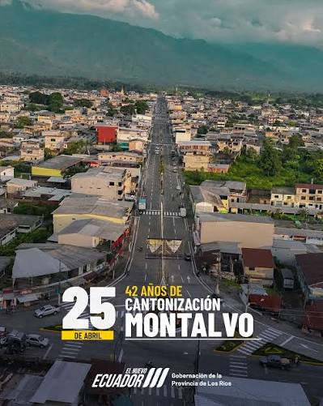

Bienvenido a la página oficial del cantón Montalvo. Una hermosa tierra caracterizada por su exuberante naturaleza, sus caudalosos ríos ideales para el turismo y su laboriosa gente dedicada al agro.

Lleva su nombre en honor al ilustre escritor ambateño Juan Montalvo. Inicialmente vinculado como recinto y parroquia, logró su cantonización definitiva el 26 de mayo de 1984, consolidando su autonomía y progreso.

El cantón Montalvo cuenta con una organización territorial enfocada principalmente en su zona urbana y sus recintos agrícolas:

La culinaria montalvineña destaca por los sabores criollos y campestres:

Sobresalen sus hermosos balnearios de agua dulce a orillas de los ríos Clarillo y Cristal, el malecón urbano y los paisajes ideales para el turismo ecológico y de aventura.

Ofrece hostales familiares, quintas vacacionales y pequeños hoteles urbanos listos para recibir a los turistas que visitan la zona en busca de sus ríos y festividades.
Alcalde: Eduardo Troncoso

Alberga a más de 25.000 habitantes, caracterizándose por su espíritu hospitalario, su profunda identidad montubia y su dedicación al trabajo agrícola.
Se localiza en el extremo sur-oriental de la provincia de Los Ríos, limitando con el cantón Babahoyo y la provincia de Bolívar.